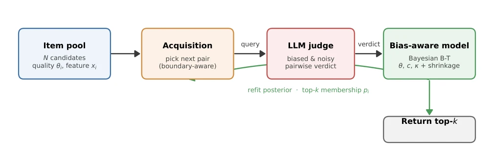
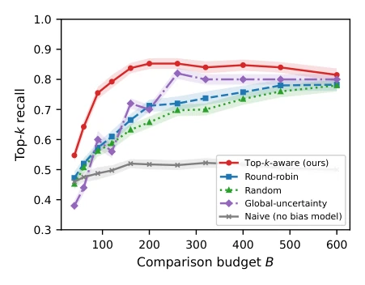
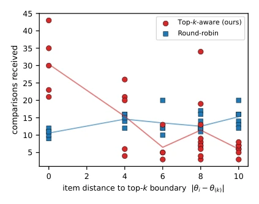
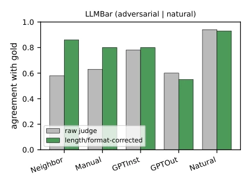
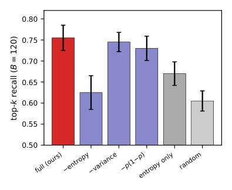
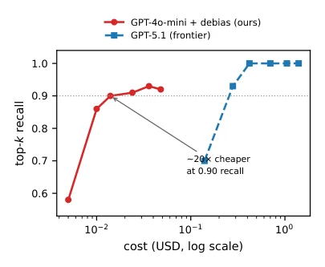
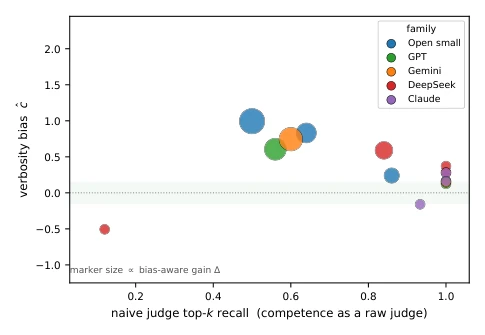

This paper pours cold water on the chaos of LLMs acting as judges. Everyone thought letting large models evaluate each other could save money, but the judges themselves love to "look at faces" — more words, better format means winning, while true ability is instead buried. The authors did not engage in fancy RL, but used Bayesian inference to model "bias" separately, and also devised a Top-k targeted active learning strategy. Although it sounds high-end, the core logic is actually quite simple: do not compare blindly, compare where it should be compared; do not trust the judge, trust the corrected judge. However, this trick is useless for top-tier models, after all they are not biased originally, mainly saving those cheap but pretentious mid-to-low-end models. This counts as a "removing fake and keeping true" for the LLM evaluation field, although it does not solve all problems, at least it lets cheap models also achieve some effect.
研究动机Motivation
LLM-as-a-Judge 已成标配 (Zheng et al. 2023)，但裁判本身不可靠。现有工作指出 LLM 裁判存在位置偏差 (Wang et al. 2024) 和冗长偏好 (Dubois et al. 2024)。简单聚合投票只能选出“长得好看”的，而非质量高的 (Zeng et al. 2024)。现有缓解手段多为启发式（如交换顺序），缺乏统计保证。此外，实际应用中我们往往只需 Top-k 而非全排序，且比较预算有限，现有主动学习多关注全局不确定性，忽略了 Top-k 边界的特异性。这导致在预算有限时，大量比较浪费在无关紧要的样本上，无法有效识别最优集合。
LLM-as-a-Judge has become standard (Zheng et al. 2023), but the judges themselves are unreliable. Existing work points out LLM judges have position bias (Wang et al. 2024) and verbosity preference (Dubois et al. 2024). Simple aggregation voting can only select those "looking good", not those of high quality (Zeng et al. 2024). Existing mitigation means are mostly heuristic (such as swapping order), lacking statistical guarantees. Furthermore, in practical applications we often only need Top-k rather than full ranking, and comparison budget is limited; existing active learning mostly focuses on global uncertainty, ignoring the specificity of Top-k boundaries. This leads to, when budget is limited, a large number of comparisons wasted on trivial samples, unable to effectively identify the optimal set.
The overall process is a budget-constrained active loop. First construct a Bias-aware Bayesian Bradley-Terry model, modeling the judge verdict as a function of latent quality \theta and bias covariates (such as length, position). The key innovation lies in introducing a shrinkage prior on bias coefficients, letting data decide if the judge is biased; when unbiased, it automatically degenerates to the standard model, avoiding overfitting. Second, propose a Top-k-aware active acquisition rule, calculating the score for candidate pairs $(i, j)$, which combines information gain with Top-k boundary uncertainty (entropy), prioritizing comparison of those samples where "whether entering Top-k is uncertain", rather than global uncertainty. Finally efficiently infer the posterior via Laplace approximation, guiding the next round of queries. This method combines bias estimation with experimental design, ensuring every comparison budget is spent on the critical edge, i.e., on key samples distinguishing the Top-k boundary.

Figure 1: Overview. A budget-limited active loop: the top-k-aware acquisition rule selects the next pair to send to a biased, noisy LLM judge; the verdict updates a bias-aware Bayesian Bradley–Terry posterior over latent quality θ and judge-bias parameters (c, κ) under a shrinkage prior; the refreshed top-k-membership probabilities pi drive the next selection. Modeling c, κ separates quality from presentation; targeting top-k membership spends the budget where it changes the returned set.
Tested on a controlled benchmark with 16 real LLM judges (including Llama, GPT, Claude, etc.), ground truth known. Metric is Top-k recall. Results show, for cheap and biased judges (e.g., Llama-3.1-8B), naive aggregation recall stuck at 0.5, while this method's approach improved to 0.9. Active learning strategy is significantly better than round-robin and D-optimal at budget 120. External validation LLMBar shows consistency with human gold standard after correcting length bias. Cost analysis indicates corrected cheap judges have cost-performance far exceeding expensive models. Ablation experiments prove the boundary entropy term is most critical. Furthermore, bias strength is negatively correlated with judge capability, indicating this method precisely positions the usage scenarios of cheap models.

Figure 3: top-k recall vs. comparison budget (Llama-3.1- 8B judge, 5 oracles × 8 seeds, ±s.e.). The top-k-aware rule reaches the bias-aware ceiling fastest; global-uncertainty is worst at small budgets; the naive model (no bias term) plateaus at a wrong top-k regardless of budget.

Figure 4: How the budget is spent (Llama judge, B=200). top-k-aware acquisition concentrates comparisons on items near the top-k boundary (∼3× more than round-robin at distance 0) and starves items far from it, whereas round-robin spreads effort uniformly. This is the mechanism behind the budget savings in Fig. 3.

Figure 6: External validity on LLMBar (judge: GPT-4o- mini, both orders). On the adversarial subsets—where the judge prefers the longer answer far more than gold does (e.g. Neighbor 0.40 vs. 0.13)—a length/format correction recov- ers gold agreement (Neighbor 0.58 →0.86); the unbiased Natural subset is unchanged. This is the positive counterpart to the SummEval limitation, where length legitimately sig- nals quality.

Figure 5: Acquisition-score ablation (Llama, B=120, ±s.e.). Each factor of the score (3) helps; dropping the top-k- boundary entropy term costs the most (it collapses to global D-optimality). All variants beat random.

Figure 7: Cost–quality frontier. A cheap biased judge (GPT- 4o-mini) with our correction reaches 0.90 recall for ≈20× less than a frontier judge (GPT-5.1); the frontier judge buys the last few points of recall at much higher cost.

Figure 8: Where the method helps (our tested judges). Each point is a judge, colored by model family, at its naive top- k recall (x, its raw competence) and verbosity coefficient ˆc (y); marker size grows with the bias-aware gain ∆. The gain concentrates on competent-but-biased judges (top-left, large markers; Spearman ρ=−0.88 between naive recall and ∆); the frontier judges we tested already rank perfectly with ˆc ≈0, and the weakest judge (bottom-left) has too little quality signal to help. Within-family trends are visible (e.g. Gemini flash-lite →2.5-pro).